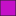

<!doctype html>
<html lang="en">
    <head>
        <meta charset="utf-8">
        <meta http-equiv="X-UA-Compatible" content="IE=edge">
        <meta name="viewport" content="initial-scale=1,user-scalable=no,maximum-scale=1,width=device-width">
        <meta name="mobile-web-app-capable" content="yes">
        <meta name="apple-mobile-web-app-capable" content="yes">
        <link rel="stylesheet" href="css/leaflet.css">
        <link rel="stylesheet" href="css/qgis2web.css"><link rel="stylesheet" href="css/fontawesome-all.min.css">
        <style>
        html, body, #map {
            width: 100%;
            height: 100%;
            padding: 0;
            margin: 0;
        }
        </style>
        <title>ANSENUM</title>
    </head>
    <body>
        <div id="map">
        </div>
        <script src="js/qgis2web_expressions.js"></script>
        <script src="js/leaflet.js"></script>
        <script src="js/leaflet.rotatedMarker.js"></script>
        <script src="js/leaflet.pattern.js"></script>
        <script src="js/leaflet-hash.js"></script>
        <script src="js/Autolinker.min.js"></script>
        <script src="js/rbush.min.js"></script>
        <script src="js/labelgun.min.js"></script>
        <script src="js/labels.js"></script>
        <script src="data/Lattevaccino_1.js"></script>
        <script src="data/Vigneti_2.js"></script>
        <!-- For the fullscreen button -->
        <script src='https://api.mapbox.com/mapbox.js/plugins/leaflet-fullscreen/v1.0.1/Leaflet.fullscreen.min.js'></script>
        <link href='https://api.mapbox.com/mapbox.js/plugins/leaflet-fullscreen/v1.0.1/leaflet.fullscreen.css' rel='stylesheet' />
        <!-- End fullscreen button-->
        <script>
        var map = L.map('map', {
            zoomControl:true, maxZoom:28, minZoom:1
        }).fitBounds([[40.58089736200915,14.297684814794485],[40.75755776030597,14.616124185205551]]);
         map.addControl(new L.Control.Fullscreen());
        var hash = new L.Hash(map);
        map.attributionControl.setPrefix('© <a href="https://www.openstreetmap.org/copyright" target="blank">OpenStreetMap</a> &middot; <a href="https://github.com/tomchadwin/qgis2web" target="_blank">qgis2web</a> &middot; <a href="https://leafletjs.com" title="A JS library for interactive maps">Leaflet</a> &middot; <a href="https://qgis.org">QGIS</a>; <a href="https://github.com/arteteco/ansenum">Source</a>');
        var autolinker = new Autolinker({truncate: {length: 30, location: 'smart'}});
        var bounds_group = new L.featureGroup([]);
        function setBounds() {
        }
        map.createPane('pane_OpenStreetMap_0');
        map.getPane('pane_OpenStreetMap_0').style.zIndex = 400;
        var layer_OpenStreetMap_0 = L.tileLayer('https://tile.openstreetmap.org/{z}/{x}/{y}.png', {
            pane: 'pane_OpenStreetMap_0',
            opacity: 1.0,
            attribution: '',
            minZoom: 1,
            maxZoom: 28,
            minNativeZoom: 0,
            maxNativeZoom: 19
        });
        layer_OpenStreetMap_0;
        map.addLayer(layer_OpenStreetMap_0);
        function pop_Lattevaccino_1(feature, layer) {
            var popupContent = '<table>\
                    <tr>\
                        <th scope="row">Numero capi</th>\
                        <td>' + (feature.properties['TOT_CAPI'] !== null ? autolinker.link(feature.properties['TOT_CAPI'].toLocaleString()) : '') + '</td>\
                    </tr>\
                    <tr>\
                        <th scope="row">Comune</th>\
                        <td>' + (feature.properties['COMUNE'] !== null ? autolinker.link(feature.properties['COMUNE'].toLocaleString()) : '') + '</td>\
                    </tr>\
                </table>';
            layer.bindPopup(popupContent, {maxHeight: 400});
        }

        function style_Lattevaccino_1_0() {
            return {
                pane: 'pane_Lattevaccino_1',
                radius: 4.0,
                opacity: 1,
                color: 'rgba(35,35,35,1.0)',
                dashArray: '',
                lineCap: 'butt',
                lineJoin: 'miter',
                weight: 1,
                fill: true,
                fillOpacity: 1,
                fillColor: 'rgba(67,210,235,1.0)',
                interactive: true,
            }
        }
        map.createPane('pane_Lattevaccino_1');
        map.getPane('pane_Lattevaccino_1').style.zIndex = 401;
        map.getPane('pane_Lattevaccino_1').style['mix-blend-mode'] = 'normal';
        var layer_Lattevaccino_1 = new L.geoJson(json_Lattevaccino_1, {
            attribution: '',
            interactive: true,
            dataVar: 'json_Lattevaccino_1',
            layerName: 'layer_Lattevaccino_1',
            pane: 'pane_Lattevaccino_1',
            onEachFeature: pop_Lattevaccino_1,
            pointToLayer: function (feature, latlng) {
                var context = {
                    feature: feature,
                    variables: {}
                };
                return L.circleMarker(latlng, style_Lattevaccino_1_0(feature));
            },
        });
        bounds_group.addLayer(layer_Lattevaccino_1);
        map.addLayer(layer_Lattevaccino_1);
        function pop_Vigneti_2(feature, layer) {
            var popupContent = '<table>\
                    <tr>\
                        <td colspan="2">' + (feature.properties['CT24_AREA'] !== null ? autolinker.link(feature.properties['CT24_AREA'].toLocaleString()) : '') + '</td>\
                    </tr>\
                </table>';
            layer.bindPopup(popupContent, {maxHeight: 400});
        }

        function style_Vigneti_2_0() {
            return {
                pane: 'pane_Vigneti_2',
                opacity: 1,
                color: 'rgba(35,35,35,1.0)',
                dashArray: '',
                lineCap: 'butt',
                lineJoin: 'miter',
                weight: 1.0, 
                fill: true,
                fillOpacity: 1,
                fillColor: 'rgba(197,16,200,1.0)',
                interactive: false,
            }
        }
        map.createPane('pane_Vigneti_2');
        map.getPane('pane_Vigneti_2').style.zIndex = 402;
        map.getPane('pane_Vigneti_2').style['mix-blend-mode'] = 'normal';
        var layer_Vigneti_2 = new L.geoJson(json_Vigneti_2, {
            attribution: '',
            interactive: false,
            dataVar: 'json_Vigneti_2',
            layerName: 'layer_Vigneti_2',
            pane: 'pane_Vigneti_2',
            onEachFeature: pop_Vigneti_2,
            style: style_Vigneti_2_0,
        });
        bounds_group.addLayer(layer_Vigneti_2);
        map.addLayer(layer_Vigneti_2);
            var title = new L.Control();
            title.onAdd = function (map) {
                this._div = L.DomUtil.create('div', 'info');
                this.update();
                return this._div;
            };
            title.update = function () {
                this._div.innerHTML = '<h2>ANSENUM</h2>';
            };
            title.addTo(map);
        var baseMaps = {};
        L.control.layers(baseMaps,{' Vigneti': layer_Vigneti_2,' Bovini da latte': layer_Lattevaccino_1,"OpenStreetMap": layer_OpenStreetMap_0,}).addTo(map);
        setBounds();
        </script>
    </body>
</html>
